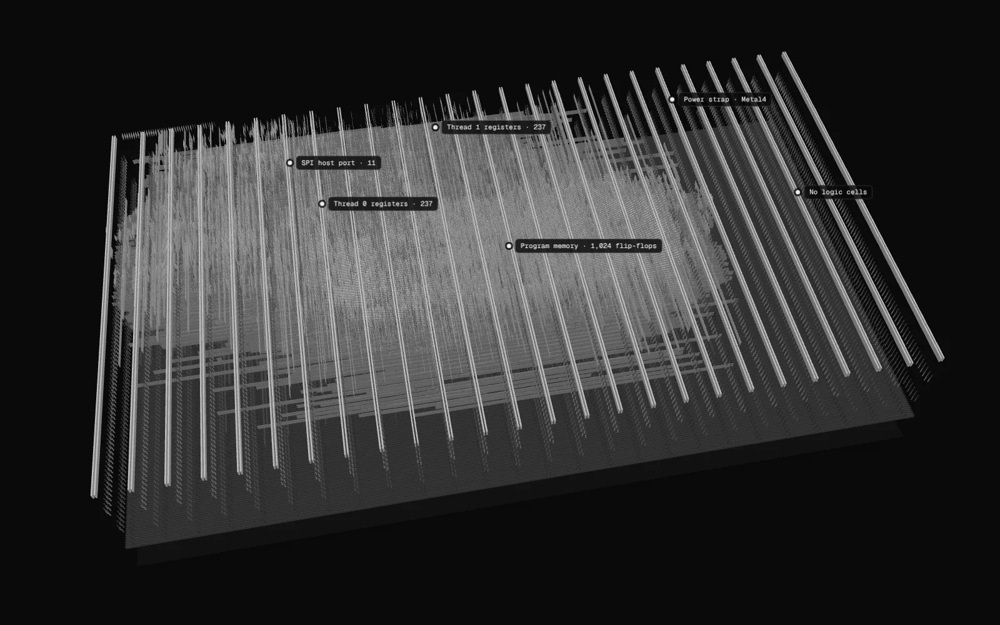

Hardcaml · ASIC · layout
protocol-emulator
The physical layout of a two-thread programmable protocol CPU for Jane Street's ASIC competition, drawn from the GDS of the build that passes DRC, LVS and the Tiny Tapeout precheck. Designed for tapeout on IHP 130 nm, 6x4 Tiny Tapeout tiles.
Layout, rotatable

Labels mark what the build data identifies. Drag to rotate · scroll or pinch to zoom · right drag to pan. Keys: arrows, + / −, R, 1 to 9.
protocol-emulator layout, IHP 130 nm (SG13CMOS5L), 6x4 Tiny Tapeout tiles, rendered from the GDS built in CI at commit 573166d (LibreLane 3.1.0.dev3, PDK revision 2bbec75). Layer heights from IHP-Open-PDK, vertical scale exaggerated 20×; the Spread control pulls the metal levels further apart for legibility, and 0 shows the stack in proportion. The 59,507 filler and decap cells are not drawn. Register owners come from net names in the routed DEF. Designed for tapeout.
What the view shows
The die is 1,289 by 711 µm, the 6x4 tile allocation set by the competition. Standard cells sit in rows on the silicon; above them the router used four metal layers, Metal1 to Metal4, joined by three via layers. The widest straps are the power grid. The strip along the right edge, 254 µm wide, holds no logic cells at all, only filler cells and power. Active area and polysilicon, the transistor layers, are off by default and can be switched on.
Of the 1,796 flip-flops, 1,525 still carry the name of the register they hold, so their owner can be read straight from the routed layout: 1,024 hold the shared 64-word program memory, 237 belong to thread 0, 237 to thread 1, 11 to the SPI host port and 16 are pin synchronisers. The other 271 sit on nets that synthesis renamed, so their owner is not shown. The placer did not keep the threads in separate blocks: thread 0's named registers lie mostly left of centre, thread 1's in a band along the top, and the program memory across the middle. The logic gates carry no register names, so only flip-flops are highlighted.